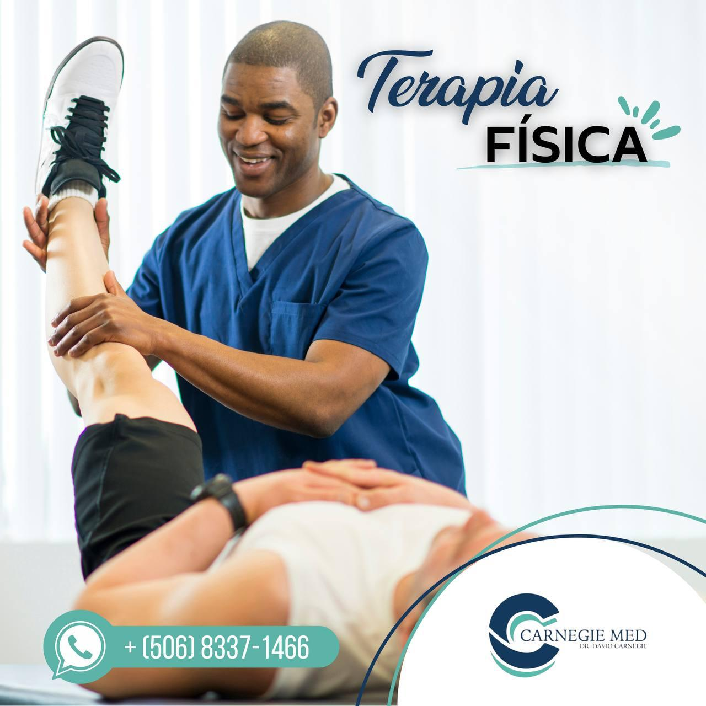

Terapia Física
Con más de 15 años de experiencia en el tratamiento de lesiones deportivas, molestias articulares, lesiones músculo-esqueléticas y procesos de rehabilitación. Nos hemos dado cuenta de que el 80% de la recuperación del paciente depende de la dirección y el buen consejo profesional que pueda seguir.
- Lesiones deportivas
- Dolor de hombro y rodilla
- Recuperación funcional